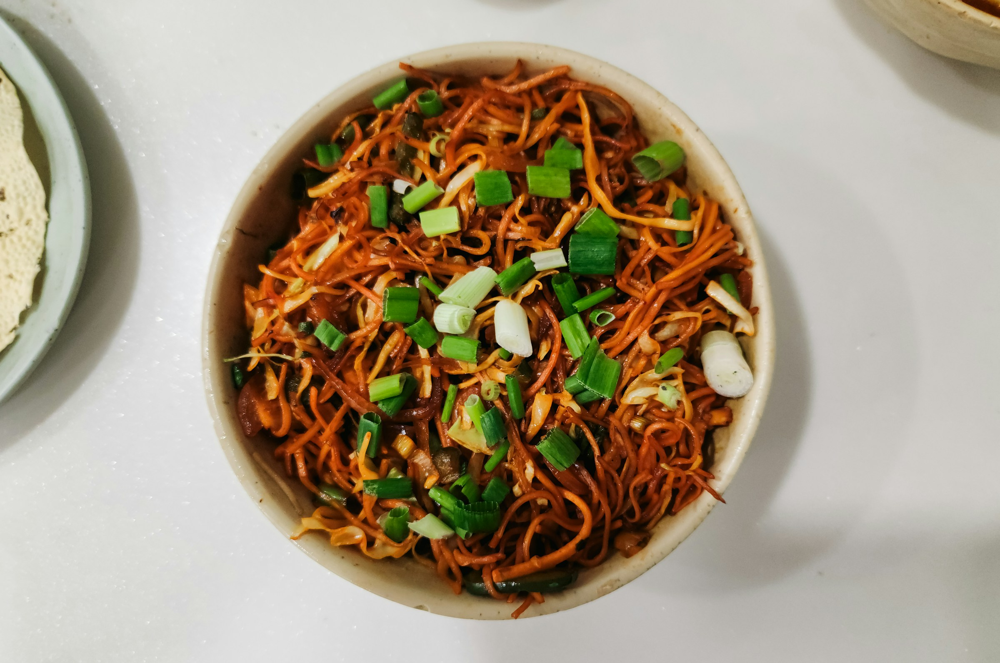

Home
Asian Noodles

Description
This is one of my go to meal for meal prep, Asian Noodles are easy to make even at home and relatively cheap.
You can also easily put individual Portions into freezer bags and put them in the freezer for later.
Properly cooled I would recommend to eat them in 3-5 days.
Ingredients
Serves 4 persons
- 400g Mie noodels
- 400g sliced chicken breast
- 2 onions
- 3 cloves garlic
- 2 carrots, cut into small cubes or thin strips
- 1 broccoli
- 150g peas
- 4 spring onions
- 100g bamboo shoots
- 8 eggs
- Soy sauce
- Cooking oil
- 20g ginger
- Black pepper
Steps
- Cook the noodles according to the package instructions. Drain and set them aside.
- Cut the chicken into small pieces. And marinate them for 30-60 minutes in Soy Sauce with additional spices like chili.
- Cut the onions, carrots, and broccoli into small pieces.
- Heat the cooking oil in a large pan.
- Add the chicken and fry for 5–7 minutes, until fully cooked.
- Add the onions,half of the spring onions, garlic, carrots, and broccoli. Stir-fry for about 5-10 minutes.
- Add the peas and bamboo shoots and cook for another 2–3 minutes.
- Crack the eggs into the mix and fry them.
- Add the cooked noodles and mix everything together.
- Add Soy sauce, ginger and black pepper to your liking.
- Stir-fry everything for another 2–3 minutes until the noodles are hot and evenly coated with the sauce.
- Sprinkle some spring onions on each serving
- Enjoy :)
Home